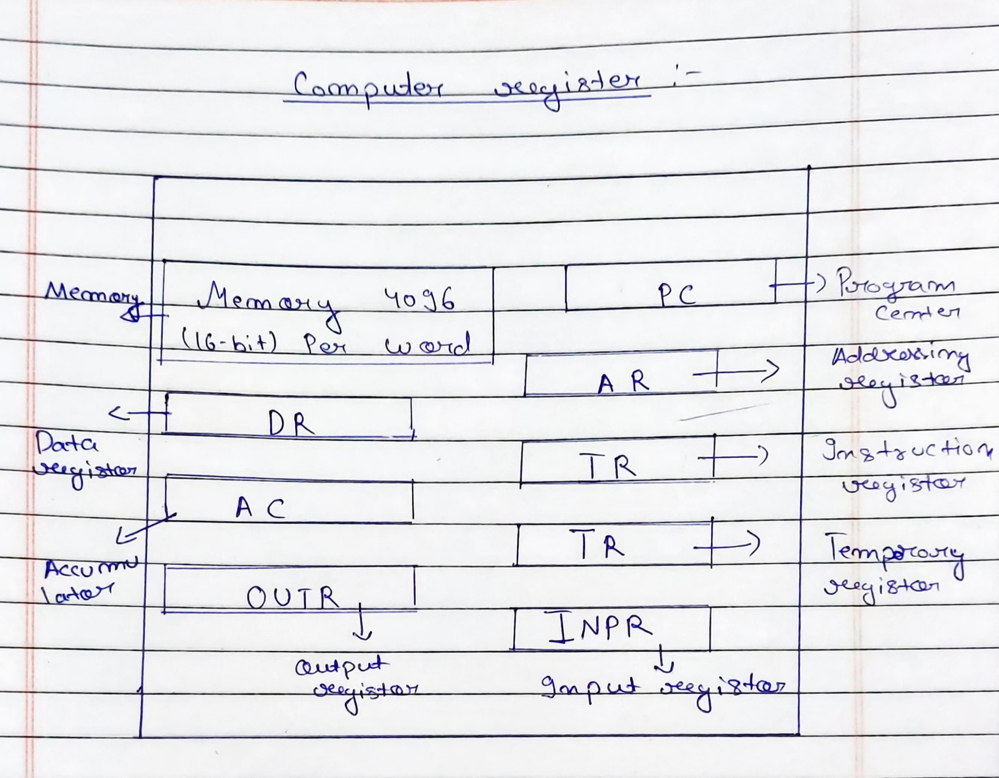
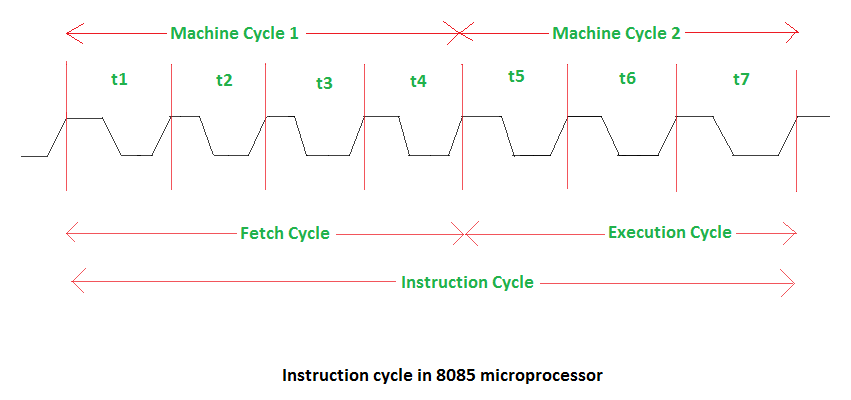
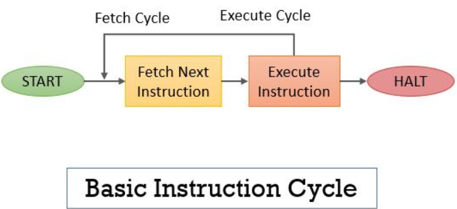
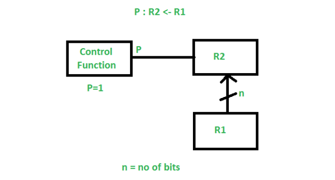
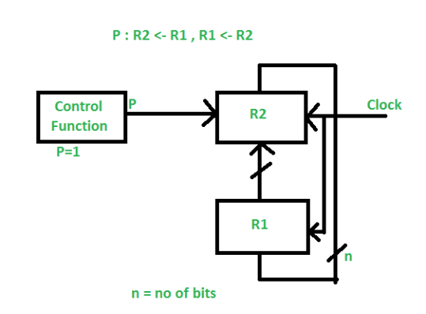

Computer memory: Computer memory refers to a storage space in a computer system that is used to store data and instructions for processing.
Here are some main types of memory:
1. RAM
2. ROM
3. Cache
4. Flash
5. Solid-State Drive (SSD)
Memory hierarchy:

Random Access Memory (RAM): RAM is volatile memory used by the computer to store data that allows access to the storage medium, and its contents are lost when the computer is powered off.
Read-Only Memory (ROM): ROM is non-volatile memory that retains its contents even when the computer is powered on. ROM is used to store essential system instructions, such as BIOS, which is essential for the computer.
Cache Memory: Cache memory is a small-sized type of volatile computer memory that provides high-speed data access to the processor and stores frequently used computer program applications and data.
Flash Memory: Flash memory is a type of non-volatile computer storage that can be electrically erased and reprogrammed. It is commonly used in USB drives, memory cards, and solid-state drives (SSD).
Hard Disk Drive: A hard disk is a non-volatile storage drive that uses magnetic storage to store and retrieve digital information using rapidly rotated disks coated with magnetic material.
Solid-State Drive (SSD): It is a type of non-volatile storage device that uses NAND-based flash memory to store data persistently.
Input Devices: Input devices are hardware components that allow users to interact with the computer system by providing data or commands.
Output Devices: Output devices are hardware components that present information or results generated by the computer to users.
Instruction Set Architecture (ISA): Instruction Set Architecture (ISA) of a CPU, also known as computer architecture or machine language, defines the sets of instructions that a processor can execute.
Here are some components of (ISA):
1. Data Type
2. Registers
3. Addressing Modes
4. Instruction Types
5. Instruction Format
6. Control Flow
7. Interrupts and Exceptions
8. I/O Instructions (Input/Output)
1. Data type: Data type specifies the types of data that the CPU can handle, such as integer, floating-point number, character, etc.
2. Registers: Registers define the set of registers that the CPU can use for temporary storage of data during computation.
3. Addressing mode: Addressing mode describes the various ways in which operands can be specified for the instructions.
4. Instruction types: Instruction types specify the categories of instructions supported by the CPU.
5. Instruction format: Instruction format defines the structure of machine instructions, including op (code operational code) and operand field.
6. Control flow: Control flow describes how the flow of control is managed in the program, including branch and jump instructions.
7. Interrupts and exceptions: Outline how the CPU responds to external events, errors, or exceptional conditions that may occur during program execution.
Computer register:
1. OUTR (8-bit): It holds the output character.
2. IMPR (8-bit): It holds the input character.
3. PC (12-bit): It is used to add the address of the next instruction to be executed.
4. AR (12-bit): It is used to hold the address of the operand in memory.
5. DR (16-bit): It holds the memory operands.
6. AC (16-bit): It is the processor register that is used to hold the result of the current operation.
7. IR (16-bit): It holds the instruction code.
8. TR (16-bit): It is used to hold the temporary data value of the operation executed by the processor.
Instruction cycle:
IC = FC + EC:
IC: Instruction cycle
FC: Fetch cycle
EC: Execute cycle
 The total number of clock cycles required to execute an instruction is called the instruction cycle.
Instruction cycle contains two operations: fetch and execute.
Fetch Cycle: The total number of clock cycles required to fetch the operand or instruction cycle from memory is called the fetch cycle.
Execute Cycle: The total number of clock cycles required to execute an instruction is called the execute cycle. IC = FC + EC
The information transformed from one register to another register is represented in symbolic form by the replacement operator and is called Register Transfer.
The operation performed on the data stored in the registers is referred to as register transfer operations.
1. Simple Transfer – R2 <- R1: The content of R1 is copied into R2 without affecting the content of R1. It is an unconditional type of transfer operation.
2. Conditional Transfer:
It indicates that if P=1, then the content of R1 is transferred to R2. It is a unidirectional operation.
3. Simultaneous Operations: If 2 or more operations are to occur simultaneously, then they are separated with a comma (,).
If the control function P=1, then load the content of R1 into R2, and at the same clock, load the content of R2 into R1.
Addressing Modes ExamplesFixed point format is derived directly from the decimal number representation. A number is represented as a sequence of digits separated by a radix point, where the digits to the left of the radix point represent the integer part and the digits to the right represent the fraction.
Example: 37.65
Represent -15 in the above representation using bit register:
F = IM × r^e
Where:
Represent 1.23 in format using exponents 0, 1, and 2:
The instruction set in computer architecture is the set of machine-level instructions that a processor can execute.